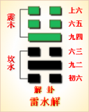
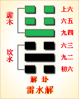

<!DOCTYPE html PUBLIC "-//W3C//DTD XHTML 1.0 Transitional//EN" "http://www.w3.org/TR/xhtml1/DTD/xhtml1-transitional.dtd">

<html xmlns="http://www.w3.org/1999/xhtml">
<head>
<meta content="text/html; charset=utf-8" http-equiv="Content-Type"/>
<title>周易第四十卦：解�?雷水�?震上坎下原文解释翻译-周易-国学�?/title>
<meta content="周易,解卦,雷水�?震上坎下" name="keywords"/>
<meta content="周易,解卦,雷水�?震上坎下，周易第四十卦：解卦 雷水�?震上坎下解释翻译�?（雷水解）震上坎�?《解》：利西南。无所往，其来复吉。有攸往，夙吉�?初六，无咎�?九二，田获三狐，得黄矢，贞吉�?六三，负且乘，致寇至，贞吝�?九四，解而拇，朋至斯�? name="description"/>
<link href="css.css" media="screen" rel="stylesheet" type="text/css"/>
</head>
<body>
<div class="gxlayout">
</div>
<div class="gxlayout">
<div class="ihead">
<div class="title"><a>周易</a></div>
<ul class="more fl">
<li>当前位置:<a>国学梦首�?/a> &gt; <a>国学经典</a> &gt; <a>经部</a> &gt; <a>四书五经</a> &gt; <a>周易</a> &gt;  周易第四十卦：解�?雷水�?震上坎下原文解释翻译</li>
</ul>
</div>
<div class="gxbl fl">
<div class="latitle">

<h1>周易第四十卦：解�?雷水�?震上坎下</h1>
<div class="lainfo"><span>作者：佚名</span> <span>全集�?a>周易</a></span> <span>来源：网�?/span> <span>[<a rel="nofollow" target="_blank">挑错/完善</a>]</span></div>
</div>
<div class="lacontent">
<div class="clearfix"></div>
<!--<!-- allowfullscreen="" frameborder="0" height="36" src="http://www.ximalaya.com/swf/sound/yellow.swf?id=1382603&amp;auto=true" width="260"></iframe>-->
<p style="text-align:center"></p>
<p style="text-align:center"><a>周易第四十卦详解</a></p>
<p style="text-align:center"><a>第四十卦初六爻详�?/a>　<a>第四十卦九二爻详�?/a>　<a>第四十卦六三爻详�?/a></p>
<p style="text-align:center"><a>第四十卦九四爻详�?/a>　<a>第四十卦六五爻详�?/a>　<a>第四十卦上六爻详�?/a></p>
<p><strong><a target="_blank">周易</a>第四十卦 �?雷水�?震上坎下</strong></p>
<p>解：利西南，无所往，其来复吉。有攸往，夙吉�?/p>
<p>彖曰：解，险以动，动而免乎险，解。解利西南，往得众也。其来复吉，乃得中也。有攸往夙吉，往有功也。天地解，而雷雨作，雷雨作，而百果草木皆甲坼，解之时义大矣哉!</p>
<p>象曰：雷雨作，解;君子以赦过宥罪�?/p>
<p>初六：无咎。象曰：刚柔之际，义无咎也�?/p>
<p>九二：田获三狐，得黄矢，贞吉。象曰：九二贞吉，得中道也�?/p>
<p>六三：负且乘，致寇至，贞吝。象曰：负且乘，亦可丑也，自我致戎，又谁咎也�?/p>
<p>九四：解而拇，朋至斯孚。象曰：解而拇，未当位也�?/p>
<p>六五：君子维有解，吉;有孚于小人。象曰：君子有解，小人退也�?/p>
<p>上六：公用射隼，于高墉之上，获之，无不利。象曰：公用射隼，以解悖也�?/p>
<p><strong><a href="40_解卦.html" target="_blank">解卦</a>卦象，雷水解卦的象征意义</strong></p>
<p>解卦，本卦是异卦相叠，下卦为坎，上卦为震。震为雷、为�?坎为水、为险。险在内，动在外。本卦的大意是，等严冬过后，当人们听到天上第一个雷声时，就知道地上的水已经冰消雪化�?a target="_blank">春天</a>到来了。这意味着万物已经从不适于生存的寒冬解脱出来。“严<a target="_blank">冬天</a>地闭塞，静极而动。万象更新，冬去春来，一切消除，是为解。�?/p>
<p>从另一个角度看，坎下震上，是说在危险中只要能积极坚持活动，终有一天会从困难的险境中解脱出来�?/p>
<p>解卦，位�?a href="39_蹇卦.html" target="_blank">蹇卦</a>之后。《序卦传》中这样解释道：“物不可以终难，故受之以�?解者缓也。”意思是事物不可能一直处于危难之中，所以在表示险难的蹇卦之后接着是解卦，意思是险难缓解�?/p>
<p>《象》中这样分析本卦：雷雨作，解;君子以赦过宥罪。这里指出：解卦的卦象是�?�?下震(�?上，坎又代表�?为春雷阵阵，春雨瀟瀟，万物舒展生长之表象，充分显示了解卦所蕴含的解除危难的含义。君子应该学习这种精神，赦免有过失的人，宽恕有罪恶的人，给他们重新做人的机会。解卦所启示的道理就是：柔道致治�?/p>
<p>解卦象征着灾祸危难的舒解，属于中上卦。《象》中这样来断此卦：目下月令如过关，千辛万苦受熬煎，时来恰相有人救，任意所为不相干�?/p>
<p>【雷水解卦释义�?/p>
<p>此卦卦名为解。“解”字通“懈”，是解脱、宽松、缓解的意思。《杂卦传》中说：“解，缓也。”前面的蹇卦代表险阻重重，行进艰难，但人生不会总处于不顺利的状态中，总会有缓解与解脱的时候，所以蹇卦的后面是解卦�?/p>
<p>解卦�?a target="_blank">�?/a>：解卦的卦画为两个阳爻四个阴爻，其排列顺序与蹇卦正好相反，解卦与蹇卦互为覆卦�?/p>
<p>解卦卦象：从卦象上分析，解卦上卦为震为雷，下卦为坎为水，天上打雷下雨便是解卦的卦象。雷声与雨滴可以使久旱的大地解决旱情;雷声与雨滴又可以清除天上的乌云，使雨过后出现一片晴�?雷声与雨滴，使大地走出冬天的冰卦雪冻，转为生机勃勃的春天;雷声与雨滴，又象征天降恩泽，使天下万物受益。这就是解卦的含义。另外，<a href="29_坎卦.html" target="_blank">坎卦</a>代表险难�?a href="51_震卦.html" target="_blank">震卦</a>代表行动，所以解卦还有用行动去脱离险难的含义�?/p>
<p>关键词：周易,解卦,雷水�?震上坎下</p>
<div class="clearfix"></div>
<div class="title"><div class="thot">解释翻译</div><span>[挑错/完善]</span></div><p><a href="40_解卦.html" target="_blank">解卦</a>：往西南方走有利。如果没有明确的目的地，不如返回来，吉利。如目的明确，早去吉利�?/p>
<p>初六：没有灾祸�?/p>
<p>九二：田猎获得三只狐狸，身上带着铜箭头。占得吉兆�?/p>
<p>六三：带着许多货物，背负马拉，惹人汪目，结果强盗来了�?占得险兆�?/p>
<p>九四：赚了钱而懈怠不想走，却被人抓去�?/p>
<p>六五：君子彼捆起后又被解开，吉利。小人将受到惩罚�?/p>
<p>上六：王公贵族在高高的城墙上射中一只鹰，并抓住了。这没有什么不吉利�?/p>
<div class="title"><div class="thot">注释出处</div><span>[请记住我�?国学�?www.guoxuemeng.com]</span></div><p>①解是本卦的标题。解的意思是分解，解除。全卦内容主要讲商旅、狩猎和俘虏。标题的“解”字为卦中多见词�?/p>
<p>②夙：早�?/p>
<p>③黄矢：�?箭头�?/p>
<p>④解：用作“懈”，意思是懈怠。拇：脚大拇趾，这里代指脚。解 而拇：意思是说不想走路�?/p>
<p>⑤朋至：获得朋贝，赚了钱。斯：则�?/p>
<p>(6)维：系，束缚。有：又。解：解开，松开�?/p>
<p>(7)罕：惩罚�?/p>
<p>(8)公：这里指贵族。隼(sun)：鹰。墉：城墙�?/p>
<div class="clearfix"></div>
<div class="contextdhall clearfix">
<ul>
<li>上一篇：<a href="39_蹇卦.html">周易第三十九卦：蹇卦 水山�?坎上艮下</a> </li>
<li>下一篇：<a href="41_损卦.html">周易第四十一卦：损卦 山泽�?艮上兑下</a> </li>
<li>全   文�?a>周易</a></li>
</ul>
</div>
</div>
<div class="clearfix mt20"></div>
</div>
</div>
<div class="clearfix mt20"></div>
<div class="gxlayout">
</div>
<script>
var _hmt = _hmt || [];
(function() {
  var hm = document.createElement("script");
  hm.src = "https://hm.baidu.com/hm.js?872034ded637616c5cf8e173a446bb0e";
  var s = document.getElementsByTagName("script")[0];
  s.parentNode.insertBefore(hm, s);
})();
</script>
</body>
</html>
